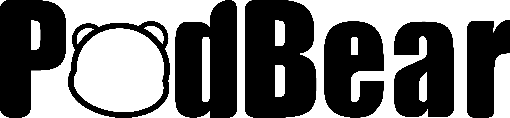
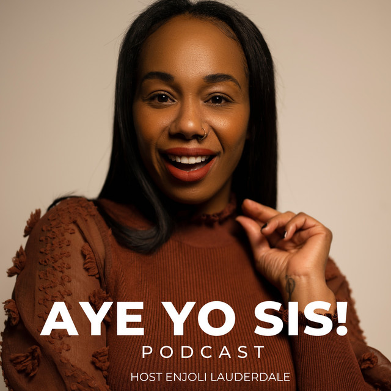
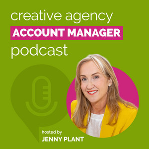
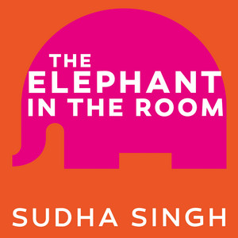
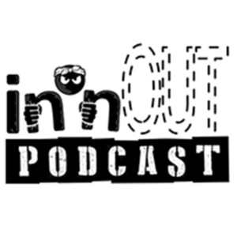
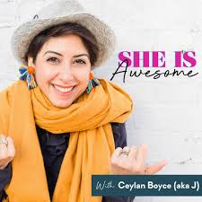
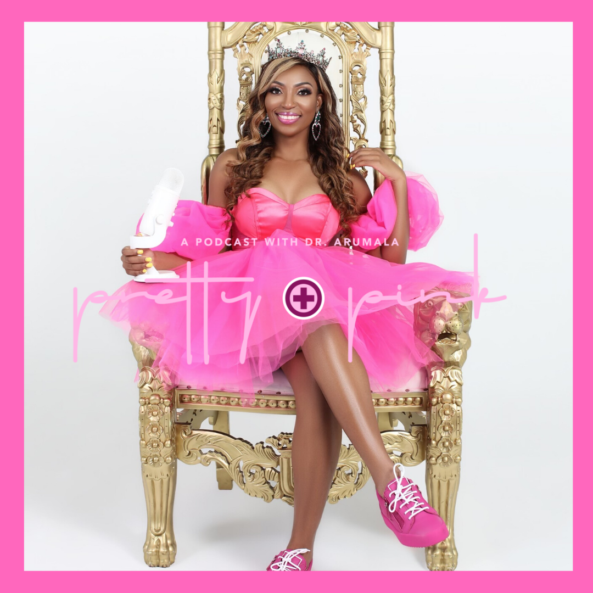

We help business owners, coaches, and entrepreneurs turn every podcast episode into high-quality content and short-form clips that build authority, keep you visible, and drive consistent growth.
Everything you need to turn your podcast into a consistent content system.
Sound clear, professional, and easy to listen to — every episode.
A clean, professional video that keeps people watching.
Turn your podcast into content that gets seen.
Trusted by podcasters, founders, and personal brands.






Enjoli Lauderdale
Aye Yo Sis Podcast
“PodBear always delivers 110%. Their professionalism and fast turnaround are unmatched.”
Mahmood Reza
I Hate Numbers Podcast
“The time and energy saved from editing means I can focus on the message and the content.”
Watch a client experience
Everything you need to know before getting started.
Podbear is best suited for business owners, coaches, entrepreneurs, personal brands, and podcasters who want to stay visible online without spending hours editing their own content.
Yes. We can support ongoing podcast production and content repurposing for clients who publish consistently and want a reliable editing partner.
Yes. We turn strong moments from your episodes into short-form clips designed to capture attention, increase visibility, and help your content reach more people across platforms.
Turnaround depends on the length and complexity of the episode, but most projects are delivered within a few days. For ongoing clients, we can also build a repeatable workflow around your schedule.
Yes. Revisions are included so the final result reflects your preferences, your brand, and the style you want your audience to experience.
Usually just your raw audio or video files, plus any notes or preferences you want us to follow. Once we have that, we take care of the editing and delivery.
No. Whether you are already publishing regularly or just starting out, Podbear can help you create polished content and a more consistent brand presence from day one.
Editing in-house takes time, energy, and consistency. Working with Podbear frees you up to focus on recording, messaging, sales, and growth while your content still goes out professionally.
Let Podbear handle the editing so you can focus on growing your brand.
Get Started